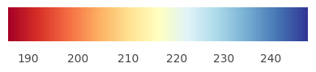

Resultados del examen Saber 11 en el Magdalena
Una mirada territorial a once años de datos
Los resultados de un examen no solo hablan de estudiantes, sino que también permiten explorar, desde otra perspectiva, algunas dinámicas territoriales y educativas. En este caso usamos los datos del examen Saber 11. Aprovechando que esta evaluación estandarizada marca el cierre de la educación media, se convierte en una fuente útil para observar ciertos aspectos del desempeño académico al finalizar esta etapa.
¿Qué estamos observando?
Como unidad de análisis utilizamos el puntaje promedio de cada municipio. De esta forma es posible pasar del resultado individual a una mirada territorial que permite comparar municipios y seguir su evolución en el tiempo.
Cada municipio aparece representado por un punto. El tamaño refleja cuántos estudiantes presentaron la prueba ese año y el color funciona como guía visual que indica la posición relativa del puntaje promedio dentro del rango observado. Los tonos cálidos señalan valores más bajos, mientras que los fríos corresponden a los más altos.

Cómo explorar el mapa
Para interactuar con la visualización, pasa el cursor sobre un municipio y verás sus datos básicos. Si deseas profundizar, al hacer clic encontrarás detalles como el puntaje mínimo, máximo y la dispersión de los resultados.
Limitaciones
Como se mencionó al inicio, el promedio es solo un aspecto del desempeño académico y no captura completamente la heterogeneidad interna. Por eso, el mapa está pensado para abrir preguntas más que para ofrecer respuestas definitivas.
Referencias
Instituto Colombiano para la Evaluación de la Educación (ICFES). (2024). DataICFES: Repositorio de Datos Abiertos. Examen Saber 11 [Conjunto de datos]. Recuperado de DataICFES .
Departamento Administrativo Nacional de Estadística (DANE). (2026). MGN2018 Integrado con CNPV2018, nivel de Municipio [Shapefile]. Recuperado de Geoportal DANE .